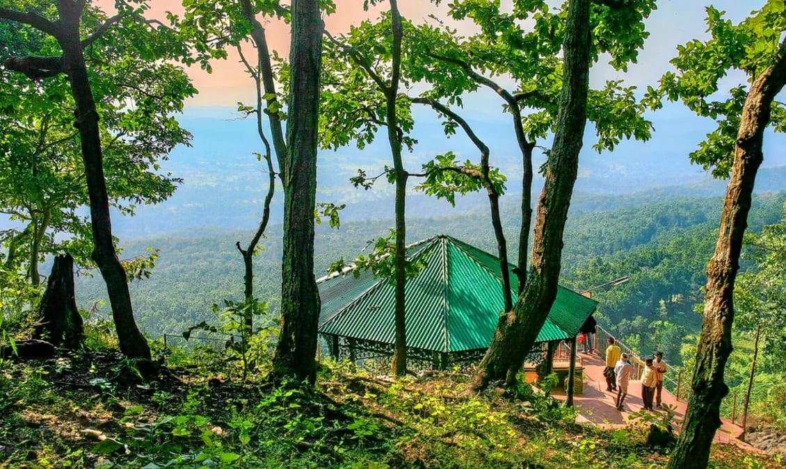
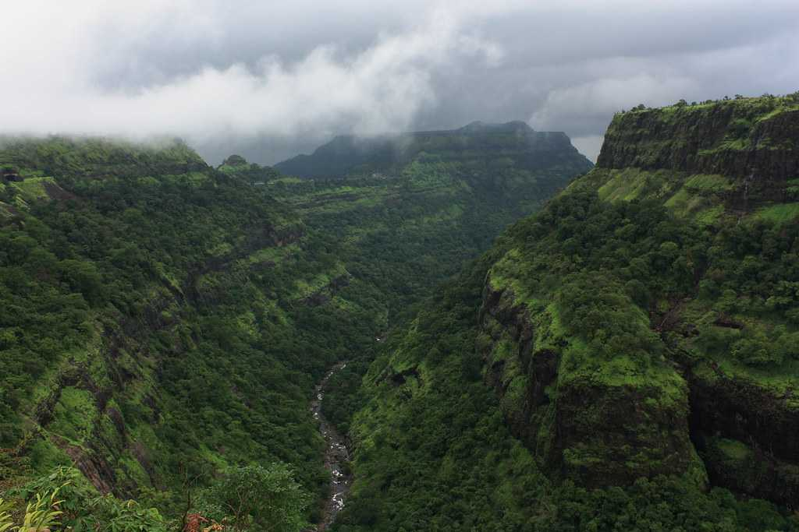
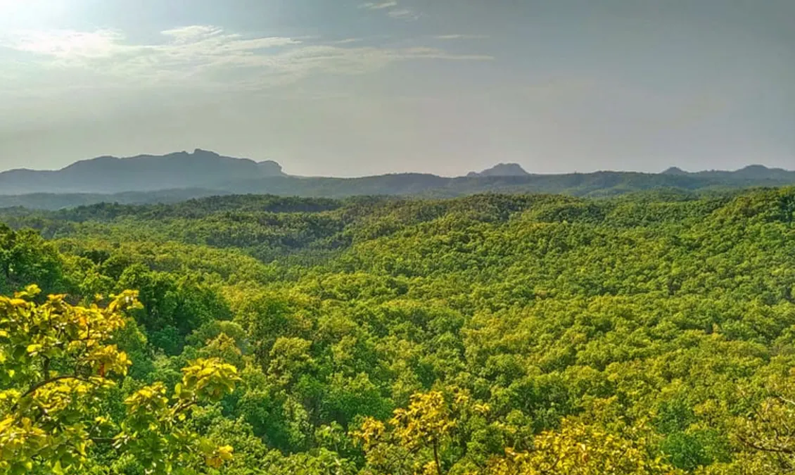

AMARKANTAK This hill station is famous for its forest area. Another name is ‘Teerthraj’ which means that ‘the king of pilgrimages’. It has a unique speciality that the three rivers, namely the Narmada, Son and Johila have their origin in the mountains of Amarkantak. It is a place for trees of medicinal value. The green environment makes a person away from a pollution and busy world. It is one of the educational research places. The Indira Gandhi National Tribal University was declared by the parliament to provide education and research for the tribal communities. It consists of twenty-eight departments such as undergraduate, postgraduate and PhD. Here the population is nearly five thousand.
SHIVPURIIt is one of the calmest places in India. In this busy world, it defines the meaning of peace. It is present at the height of 478 meters above sea level. It also contains Madhav Vilas Palace, which stands for its royal wealth and pride. This palace looks so stunning due to the red-pink colour and its smoothening architecture. Like the Ganga river, it also has a holy bathing place called Parihar. In ancient period it was in the hands of Mughal emperors. It also contains the heavenly Sanctuary called Karera Bird Sanctuary which gives pleasure to the eyes of ornithologists. Around 245 species of birds are present. It is also a home for wild animals such as tiger, elephant, monkeys and leopards and exotic blackbuck. In every area, there will be a local festival. For example, Diwali, Holi etc. Like the same Shiv, Chaturdashi is the most famous festival here. Here a great freedom fighter Tatya Tope was hanged to death.


MANDU It is best known for architectural beauty, and it is a place for an ancient monument in India. It is present at the Malwa- region of western Madhya Pradesh. Here stone pillars ware surrounded with different entrance. Here it consists of a lake and palace which is best suited for the lovely couple to spend some romantic time. During the month between March and October, the climate was so pleasant. A resort called Malwa resort, which is famous for its accommodation and variety of food. Temples like Jain Temple, which is attracted by Islamic architecture. The famous United Nations Educational, Scientific and Cultural Organization (UNESCO) established that Mandu Hill as a “World Heritage Site”.
PACHMARHI is “Queen of the Satpuras” which is in Hoshangabad district of Madhya Pradesh. It is called so because it is above the sea level of the Satpura range. Here it has a famous five cave commonly called Pandavas cave. It also contains a Priyadarshini waterfall which is likely falling from heaven. Here a Beautiful place called Apsara vihar, which is best suited for a family picnic. In this world, the most beautiful visualization is sunset. So, Rajendragiri sunset point gives the most fabulous sunset view. In 2009, UNESCO (United Nations Educational, Scientific and Cultural Organization) declared that Pachmarhi park as Biosphere reserves. The total area is about 4981.72-kilometer square. Here many towns were created. In modern times, James Forsyth, who was the Captain of the British army, developed these towns which include beautiful colonial-style churches. The population is about thirteen thousand. The average weather is about 18-degree celsius.
